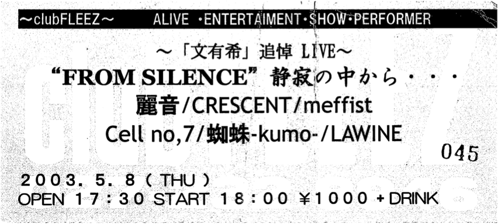

CRESCENT, méffist, Cell no,7, 蜘蛛-kumo-, LAWINE

A memorial concert for Fumiyuki (文有希), who passed away in April 2003.
The replacement vocalist for Fumiyuki of RAIN (麗音) is Keiju (佳樹), who is vocalist of 蜘蛛-kumo- and Fumiyuki's younger colleague.
No one would have thought that RAIN would be reunited in this way after it broke up...
I didn't want this day to come, but I managed to go to the live house. My friends were supposed to be there, but I couldn't talk to them at all. It happened so suddenly that my mind couldn't catch up with it...
Ken from CRESCENT was unable to perform on this day because he was on tour with MERRY. Instead, there was a message by telegram from Ken.
After CRESCENT played a sad ballad song, Tatsuya (龍夜) said in the MC: "It's too sad... I guess I picked the wrong song..." I remember him saying something like that.
As for the important part, RAIN, I think they played some rare songs that I've never heard before? Sorry! I don't remember at all...
I don't mean to be disrespectful to the band members who had worked so hard and hurriedly to practice for this day, but to be honest, this day was like a wake with a roaring sound for me, and I was watching Fumiyuki's remains on display behind me, stunned, and before I knew it, it was over.
I was just a lump of flesh with no heart, like a machine...
The only thing I remember is that Keiju told us in the MC that he had promised something like "If Fumiyuki dies, Keiju will play RAIN's "less", and if Keiju dies, Fumiyuki will play kumo's "forever"."
I felt the deep trust between Fumiyuki and Keiju.
Then there were commemorative photo sessions of the bands and the audience.
These photos can be seen in the booklet of the Fumiyuki tribute album "to SILENCE" to be released later.
There was a farewell party for Fumiyuki after the live, but my brain just couldn't accept the fact that Fumiyuki had died, so I ran away without going.